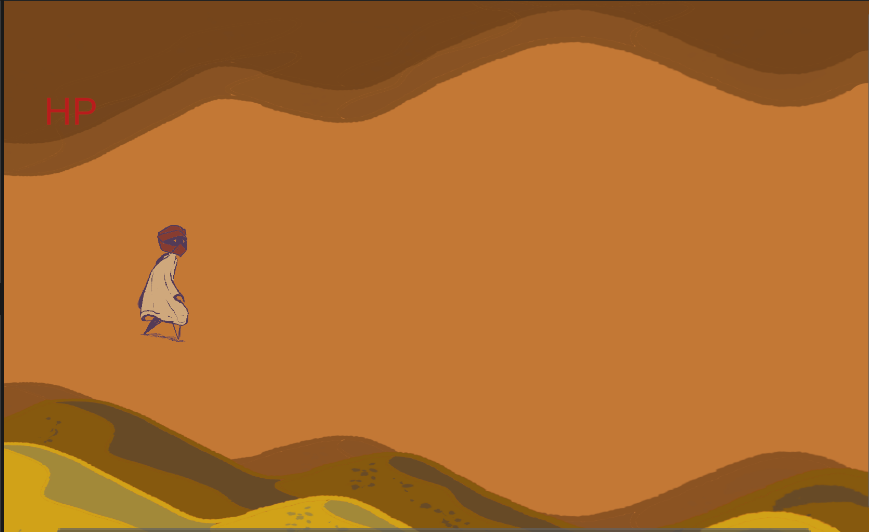
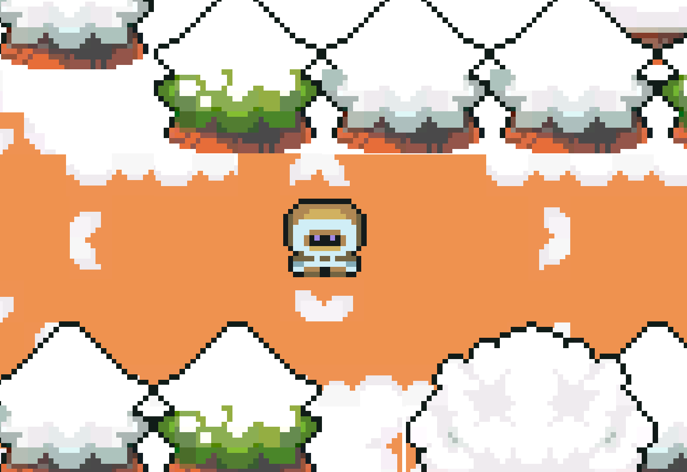

Back End Memories
[EDUCATIONAL/NARRATIVE 2D PLATFORMER]
My senior capstone project exploring our relationship with technology. Play as a junkyard shephard trying to guide digital memories to a new life.
Role: All (Environmental sprites by Kenny 1-bit assets) Created with Unity & Piskel
↓ click through slides ↓


Fight or Flight
[NARRATIVE 2.5D PLATFORMER]
Created in a team of 4 during a 24 hour game jam, with the theme of Migration. Help Peng the Penguin navigate his treacherous melting home, on a journey to find new oppurtunity.
Role: Concept Artist, 2D Background and Character Artist Created with GoDot & Clip Studio
↓ click through slides ↓



